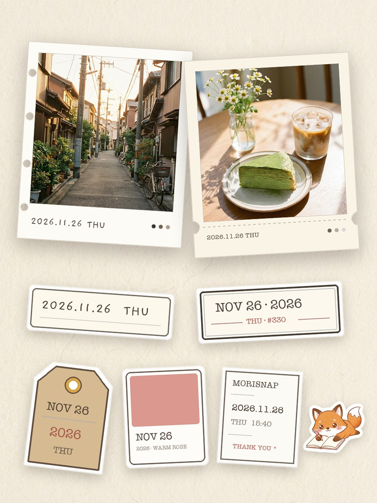
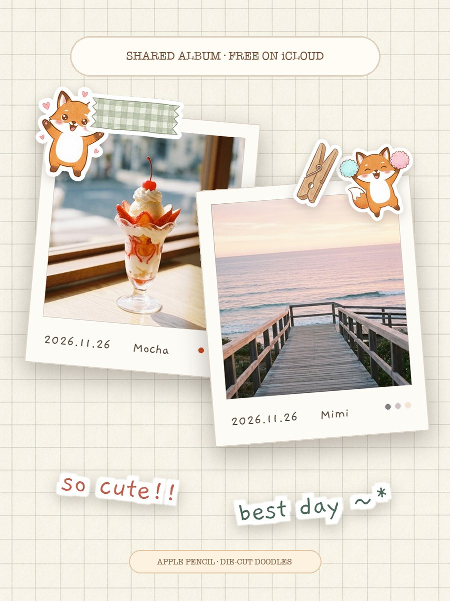

01 · 新手必學
搖一搖換貼紙 ＋ 蓋心情戳印
- 1輕按快門（或音量鍵）拍照；長按錄 3 秒短片
- 2搖一搖換貼紙，拖右下 🔄 單指旋轉縮放
- 3點「晴／雨／咖啡」蓋章，點「📍 城市」印城市名
直接看畫面就會用，點影片右下角 🔇 還能聽原創音樂和真實音效 🦊



Tap 🔇 on any clip to hear original lofi music & real sound effects 🦊
動画右下の 🔇 を押すとオリジナル音楽や効果音も聴けます 🦊
영상 오른쪽 아래 🔇 를 누르면 오리지널 음악과 효과음도 들려요 🦊